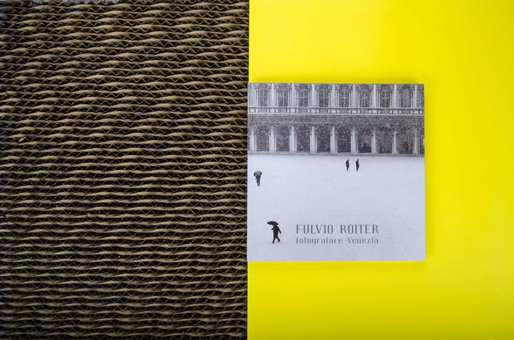

Fulvio RoiterFotografare Venezia, libro fotografico
- Formato
- 28 × 28 cm
- Interno
- 144 facciate a 4/4 colori, vernice offset su particolari, carta Sappi Tempo opaca 170 g
- Copertina
- 4 colori su carta opaca 170 g, plastificazione opaca. Risguardi a 1 colore su usomano 160 g
- Confezione
- Volume cartonato, dorso quadro con capitelli